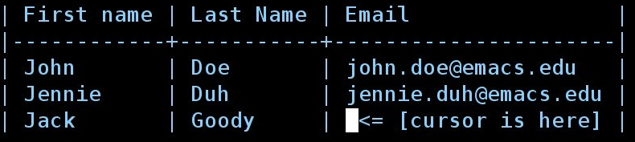
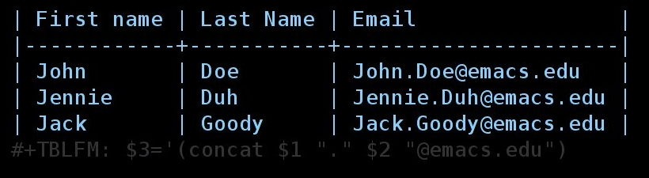

Org as a spreadsheet system: using Emacs lisp as formulas
Table of Contents
Introduction
This tutorial explains how to use Emacs Lisp as formulas in Org tables. If you want a general tutorial on how to use Org as a spreadsheet system, read this tutorial. You can also check the complete Org documentation on this topic1.
Example 1: manipulate cells
Here is a simple table:
| First name | Last Name | |
|---|---|---|
| John | Doe | john.doe@emacs.edu |
| Jennie | Duh | jennie.duh@emacs.edu |
You easily notice the pattern [firstname].[lastname]@emacs.edu for the
third column. Given a first name and a last name, it should be easy to
compute the result for the “Email” column.
Okay, let’s do it then. First put your cursor in the third column:

Now type C-c } to display the table’s coordinates.
For each row, you want to concatenate the content of the first column
(accessed with $1) to a string with a dot (“.”) to the cell of the second
column (accessed with $2) and to the string “@emacs.edu”. In Emacs Lisp,
you would write this:
'(concat $1 "." $2 "@emacs.edu")
Now copy this formula, type C-c = in the bottom right field to insert a
column formula2 and copy the formula here. Hitting RET will
immediately insert the result in this field (Jack.Goody@emacs.edu) and
add the #+TBLFM line at the bottom of the table.
Caveat: beware of the initial quote: the formula is the expression
itself, not its value. This expression will only have a meaning when the
$1 and $2 references will be replaced by the right strings, an the
expression will then by applied as a formula by pressing C-c C-c on
#+TBLFM.
So you now have this table:

At the time the formula is evaluated, the references $1 and $2 are
interpreted and replaced by the values of these cells as strings: you
don’t need to enclose $1 with quotes (“$1”).
If you want to force the references ($1 and $2) to be interpreted as
numbers, add the flag ;N at the end of the Emacs lisp expression. See
for example this table
| First name | Last Name | Maths | French | Mean |
|---|---|---|---|---|
| John | Doe | 12 | 16 | 14 |
| Jennie | Duh | 15 | 9 | 12 |
where we used this formula for the fifth column:
#+TBLFM: $5='(/ (+ $3 $4) 2);N
As an exercise, try to find Emacs lisp formula for the fifth column in this table:
| First name | Last Name | Maths | French | Mean |
|---|---|---|---|---|
| John | Doe | 12 | 16 | John: 14 |
| Jennie | Duh | 15 | 9 | Jennie: 12 |
All you have is the values of the first four columns. (Hint: check the
Emacs lisp functions string-to-number and number-to-string.)
Solution: we cannot use the ;N flag because it will force
interpretation of the cells as numbers, and if we do so, we will not be
able to access the value of cells in the first row. So one idea is to
use string-to-number and number-to-string this way:
#+TBLFM: $5='(concat $1 ": " (number-to-string (/ (+ (string-to-number $3) (string-to-number $4)) 2)))
Another idea is to use the ;L flag: instead of using interpreting cells
as strings or numbers, it inserts their content literally in the Emacs lisp
expression. So the formula above can safely be replaced by this more
condensed one:
#+TBLFM: $5='(concat "$1" ": " (number-to-string (/ (+ $3 $4) 2)));L
Note the double-quotes around “$1”: that’s because inserting a first name
literally would mean “it is an Emacs lisp symbol”. So, when using the ;L
flag, adding double-quotes makes sure the reference is interpreted as a
string.
We’re done!
Example 2: manipulating ranges
Suppose now we have this table
| Col1 | Col2 | Col3 | Col4 | Col5 |
|---|---|---|---|---|
| ? | ? | in Col1 and Col2 (no duplicates) | only in Col1 | only in Col2 |
| ? | ? | … | … | … |
| ? | ? | … | … | … |
Col1 and Col2 contain strings.
We want the first cell of the third column to contain a string with all the
strings that are in both Col1 and Col2, with no duplicates. Col4
contains strings that are only in Col1 (and not in Col2) whereas Col5
contains strings that are only in Col2 (and not in Col1).
How to automate this with an Emacs lisp formula?
Let’s first figure out the result we want for a simple table:
| Col1 | Col2 | Col3 | Col4 | Col5 |
|---|---|---|---|---|
| a | a | a b c d | c | d |
| a | b | |||
| b | a | |||
| c | d |
Now let’s get the values of the first column starting from the second row.
The “a” on the top left cell can be accessed through the reference
@2$1. The “c” on the bottom left cell can be accessed through the
reference @5$1. The range of cells can then be accessed with
@2$1..@5$1.
Let’s add this range in the first cell of Col3:
| Col1 | Col2 | Col3 | Col4 | Col5 |
|---|---|---|---|---|
| a | a | a a b c | c | d |
| a | b | |||
| b | a | |||
| c | d |
Here is the formula:
#+TBLFM: @2$3='(mapconcat 'identity (list @2$1..@5$1) " ")
How to read it?
When interpreted, the range @2$1..@5$1 is replaced by the values of the
cells, separated with a space. So (list @2$1..@5$1) becomes (list "a"
"a" "b" "c") and the whole formula becomes
'(mapconcat 'identity (list "a" "a" "b" "c") " ")
which basically means “Concatenate elements of (”a“ ”a“ ”b“ ”c“) and add a single space between each of them”.
Let’s generalize and say that we don’t know how many rows our table
contains. The range @2$1..@5$1 becomes @2$1..@>$1 where @> means
“the last row” and @>$1 “the last row in the first column”.
Remember: we want the third column to contain a string with all the strings
that are in both Col1 and Col2, with no duplicates. Let’s first list
all values from Col1 and Col2 with (list @2$1..@>$1 @2$2..@>$2), then
delete duplicates like this (delete-dups (list @2$1..@>$1 @2$2..@>$2))
then put this expression in the one we already have above.
#+TBLFM: @2$3='(mapconcat 'identity (delete-dups (list @2$1..@>$1 @2$2..@>$2)) " ")
| Col1 | Col2 | Col3 | Col4 | Col5 |
|---|---|---|---|---|
| a | a | a b c d | ? | ? |
| a | b | |||
| b | a | |||
| c | d |
Okay. Now that you know how to manipulate ranges, you can replace the “?”
with the right formulas… remember: Col4 contains strings that are only
in Col1 and not in Col2, whereas Col5 contains strings that are only
in Col2 and not in Col1. (Hint: you can write your own functions and
use them in an Emacs lisp formula.)
Don’t forget that you can edit a table’s formulas with by hitting C-c ’
anywhere on the table: it will open the formulas editor, which highlights
references that the cursor is on (both in the formulas editor and in the
table). The formulas editor is really handy when you need to check that
your references are correct. Also, hitting TAB on a formulas in this
editor will pretty-print the formula, which helps editing a lot !
Conclusion
Please check the Org manual for (condensed but accurate and up to date) information on using Lisp as formulas: see the manual online or as an .